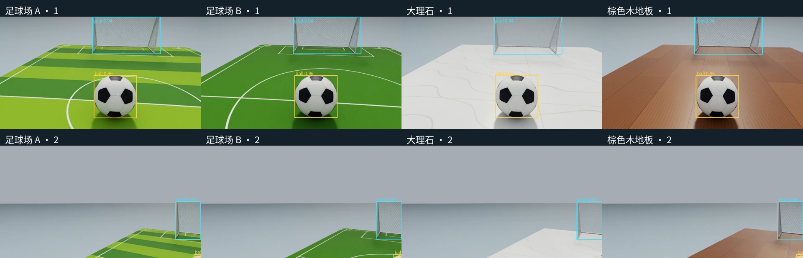

SELF-PACED WORKSHOP
完成自主射门
依次实现检测、定位、站位规划、接近控制与技能交接，最后在 Isaac Sim 中运行完整自主射门。
先运行固定检测器


python3 scripts/workshop.py detect \
--model models/indoor-detector/detector.pt \
--source datasets/indoor-sample/images \
--output outputs/detection-01预期结果：生成标有球和球门检测框的图片。请逐张检查球体较小、靠近画面边缘或受到遮挡时的检测表现。检测置信度只是模型给出的分数，并不能保证目标判断一定正确。
- 1RGB 图像
- 2检测框
- 3图像射线
- 4距离与地面约束
- 5身体坐标下的目标
这里加载适配钢网球门和印花垫子的检测器。八张示例来自独立图像测试集、覆盖四种图案；原检测器与原场景练习集仍保留。图像检测通过后，还要检查门柱底部提取和已知尺寸定位，检测框本身不足以直接规划路径。
数据集、标签与检测指标
练习集包含 40 张图像，按 24 / 8 / 8 划分为训练集、验证集和测试集。训练集用于更新参数，验证集用于观察训练过程与选择模型，测试集应留到方案确定后再使用。无论标签来自人工标注还是另行搭建的 Isaac Sim 合成数据管线，都应把图像、标签、场景参数和划分规则一起保存，防止相邻近似帧跨集合泄漏。当前小样本集仅用于跑通训练流程，不能代表真实部署中的全部光照、遮挡、距离和背景条件。
每行标签按 class x_center y_center width height 排列；类别 0 为足球，类别 1 为球门，四个坐标量均按图像尺寸归一化。训练前，应将标签绘制回原图，检查边界框是否贴合目标；这比只确认文本文件存在更有意义。
IoU 衡量预测框与标注框的重合程度；精确率 P 表示检出目标中有多少是正确的，召回率 R 表示真实目标中有多少被检出。mAP 综合各类别的精确率—召回率表现；mAP50 使用 IoU = 0.5，mAP50–95 则对多个 IoU 阈值取平均。这些指标都不同于射门成功率。
YOLO("yolo26n.yaml").train(
data=str(config),
epochs=a.epochs,
batch=a.batch,
seed=a.seed,
imgsz=640,
pretrained=False,
project=str(a.output.parent),
name=a.output.name,
exist_ok=False,
device=0,
workers=2,
plots=True,
)与前面的固定权重推理不同，本练习根据模型结构配置创建网络，并设置 pretrained=False，从随机参数开始训练。5 个 epoch 仅用于观察数据加载、损失计算和模型保存流程，不足以让检测器达到可用水平。
在一次相同配置的运行记录中，results.csv 第 5 轮的累计时间约为 6.05 秒，验证 mAP50 约为 0.00132，完整程序的启动耗时另计。这表明短练习工作流可以正常运行，但模型效果很差；后续任务仍使用固定检测器。还应查看保存的标注图、漏检和误检，不能只关注损失是否下降。
扩充数据时，可利用 Isaac Sim 对相机位姿、光照、材质与遮挡做受控变化，并保存与每张图像对应的场景参数和标签来源；仍应按场景或序列划分数据，避免相邻近似帧同时进入训练集和测试集。合成覆盖不能替代真实相机测试，尤其是镜头畸变、噪声和材质反射差异。训练时间取决于数据量与预算；可先用短练习测量每轮耗时，再安排后续实验。
练习训练一个检测器
python3 scripts/workshop.py train-detector \
--data datasets/sample/data.yaml \
--epochs 5 \
--batch 8 \
--seed 303 \
--output outputs/student-detector-01小样本和 5 个 epoch 只用于体验数据准备、标注、训练和验证流程，并不是完整的训练方案。请打开输出目录中的损失曲线和验证图片，检查标签是否正确覆盖球与球门。如需正式提升效果，应增加场景多样性，并严格分开训练、验证和测试场景。
检查标签与检测结果
练习集共包含 40 张图像，按照 24 / 8 / 8 划分为训练集、验证集和测试集。类别编号 0 表示球，1 表示球门。YOLO 标签的每一行采用 class cx cy width height 格式，后四项均按图像宽高归一化。例如，中心横坐标 0.5 表示画面宽度的一半，而不是世界坐标中的 0.5 米。Isaac Sim 支持为受控场景构建合成数据与标注流程，这有助于系统覆盖视角、光照和遮挡；这里的小数据集仍应按其现有标签检查，不能把场景中的物理真值或语义 ID 当作检测器已经见过的答案。
请从推理输出中各选一张检测正确的图像和一张困难样本，分别检查漏检、误检与检测框偏移，并观察同一物体在大小和位置上的变化。再高的置信度也无法修复相机标定错误，更不能让二维检测框自动获得深度信息。进入导航阶段前，还必须检查距离、姿态、时间戳和数据有效性。
检查理解
标签中的球框中心为 (0.6, 0.4)，是否可以直接作为导航目标 (0.6 m, 0.4 m)？
查看解析
不能。这是归一化图像坐标。需要相机模型和距离或地面约束，才能得到机器人坐标中的位置。
换垫子、灯光或球门，哪些模型需要适应？
域随机化让模型在训练时见到一组有意义的变化，减少对单一场景的依赖。它应针对真正受到变化影响的环节：RGB 检测器会受垫子颜色、白线、光照和网格影响；行走与踢球策略主要受摩擦、电压、延迟、质量和接触影响。当前系统由检测、几何、Nav2 与动作策略组成，并未使用 GR00T 这样的视觉—语言—动作模型。
| 变化 | 主要影响 | 应怎样处理 |
|---|---|---|
| 垫子 A–D、光照、相机姿态 | 检测框与轮廓 | 生成多样的 RGB 数据，按场景划分训练与测试 |
| 球门宽度、位置与球直径 | 视觉尺度、地图和进球判定 | 同步几何参数；不能仅换贴图或依靠随机化 |
| 摩擦、电压、延迟、质量 | 行走、触球和恢复 | 先测量合理范围，再评估是否需要策略适配 |
| 未知障碍、垫子边缘或变形 | 可通行区域与接触 | 补充感知和物理建模，再测试规划与控制 |
新钢网球门与印有白线的垫子改变了检测任务：原检测器在开发图像中出现球门漏检和场地线误检。因此只针对检测器继续训练，保留原行走、踢球与残差权重。训练数据包含四种垫子与光照、位置、相机变化，共 48 个场景种子、768 张图像；同一场景的不同图案和视角必须分到同一集合，避免相似画面泄漏到测试集。
这次用 512 张训练、128 张验证、128 张测试图像继续训练 60 轮。固定检测器在保留测试集上的 mAP50 为 0.945，mAP50–95 为 0.920。它们衡量检测框质量，不是自主射门成功率，也不能证明域随机化带来了多少独立提升；后者还需要保持数据量与训练预算相同的消融对照。完整任务仍须单独检查定位、路径、出脚、过门与恢复。
是否继续扩大随机化范围，应由失败决定。先用同一模型切换四种垫子，再测试未参与训练的光照和球位。如果只在某种白线附近失去球的轮廓，优先检查视觉；如果识别与站位正确，却打滑或恢复失败，再研究物理随机化。不要同时大幅改变所有参数，否则很难判断哪项变化起作用。
思考：只把球门宽度改大，保留原来的视觉中心距和地图，增加光照随机化能修复定位偏差吗？不能。像素变成米依赖实际尺寸；错误尺寸带来的系统性尺度偏差，需要修改几何约定。
本次微调运行 60 个 epoch，训练墙钟约 4.3 分钟，不包含采图、导出和整场仿真。随机化图案与光照属于视觉训练；球门中心距等已知几何不能只在画面里随机变化而继续沿用旧标定。若要换球门尺寸，应同步定位先验、地图和进球判据，或者另行设计尺寸未知的估计方法。
| 同一组 128 张新场景测试图 | mAP50 | mAP50–95 |
|---|---|---|
| 原检测器 | 0.273 | 0.199 |
| 适配后的检测器 | 0.945 | 0.920 |
这组对照表明原检测器不适合直接移到新场景，微调改善了检测表现。它比较的是新旧检测器，不是“有域随机化”和“无域随机化”的训练消融；因此不能把提升全部归因于随机化。检测更准确之后，仍需检查观测新鲜度、路径交接与恢复动作。
先验证出脚站位的计算
python3 scripts/workshop.py plan \
--ball 0.08 0.03 --goal 0.68 0 \
--distance 0.18 --lateral 0.035 \
--output outputs/stance-plan-01打开输出目录中的 plan.svg，对照上一章的公式检查目标点。这里使用手工给定的坐标，仅验证几何计算；完整任务会从传感器估计目标位置，再调用导航和运动技能。
为什么行走策略不能直接负责射门
行走需要持续跟踪速度并维持周期性支撑；射门则要在合适时刻快速摆动一条腿、接触足球，再恢复支撑。Isaac Lab 允许两项技能复用相同的机器人、观测管理器、动作管理器和 Newton 执行器配置，同时分别定义命令、事件与终止条件。这样既减少接口漂移，也不会抹平两项技能在目标和时间尺度上的差异。如果只把“碰到球”加入行走奖励，可能得到失衡碰撞，而非可重复的踢球动作。
左右滑动查看完整图示
残差学习保留教师策略的基本行为，再学习有限的动作修正，从而利用已有动作，不必从零学习全部关节协调。下面的公式仅表达这一思想：实际踢球控制还包含阶段调度、动作限幅和恢复逻辑，不能直接将任意两份模型输出相加。
教师策略输出基础动作，残差 Δa 提供修正，α 表示修正幅度。训练残差需要新的环境交互和任务奖励；本章不重新训练已保留的踢球模型，而是学习其接口与调用条件。行走模型与教师模型使用 61 维输入，残差模型使用 62 维输入；新增信息的含义必须与训练时一致。
| 检查项 | 为什么必须检查 |
|---|---|
| 观测顺序和归一化 | 同样长度的数组，字段含义仍可能不同 |
| 14 个动作对应的关节 | 错序会把某个关节的动作发送给另一个关节 |
| 参考姿态与动作缩放 | 相同输出值可能代表不同目标角度 |
| 出脚与结束条件 | 要区分接触足球、射入球门和恢复站稳 |
验证不能止于“文件可以加载”。先用下方命令检查模型接口，再观看带进度条的任务录像，分别定位接近、出脚和恢复时刻。观察出脚前球与支撑脚的间距、摆动腿是否留出空间，以及恢复后机身倾角是否收敛；脚球接触与过门仍要依据 Newton 物理记录，不能凭画面重叠或单帧截图判断成功。
技能控制器决定本次使用行走动作还是踢球动作，随后仍通过 Isaac Lab 的同一套动作管理器执行。下面节选了两个频率层次中的调用：策略以 50 Hz 提交关节目标，物理循环以 200 Hz 应用动作、写入场景并推进 Newton。这样，切换技能时可以继续使用相同的机器人、执行器和接触模型。
env.action_manager.process_action(last_action)
# 每个物理步执行
env.action_manager.apply_action()
env.scene.write_data_to_sim()
sim.step(render=False)
env.scene.update(0.005)把残差公式对应到实际运行代码
实际运行时同时使用站立教师、踢球教师和残差模型。出脚阶段先按时间权重混合两个教师，再添加经过双曲正切限制的残差；这使基础动作逐渐回到站立，并限制修正幅度。下面的公式与当前固定运行代码对应，不是建议您直接更改这些参数。
actor = np.concatenate(
(obs, np.array([np.clip(phase, -1, 4) / np.float32(4)], np.float32))
)
standing = self._infer(0, obs)
kicking = self._infer(1, obs)
residual = self._infer(2, actor)
u = np.clip(
(phase - np.float32(0.14)) / np.float32(0.12),
np.float32(0),
np.float32(1),
)
weight = np.float32(1) - u * u * (np.float32(3) - np.float32(2) * u)
teacher = weight * kicking + (np.float32(1) - weight) * standing
delta = np.float32(0.2) * np.tanh(residual)第 62 个输入是归一化的阶段时间。weight 对应 w(t)：开始的 0.14 秒使用踢球教师，随后用 0.12 秒过渡到站立教师。tanh 把每个残差修正限制在 −0.2 到 0.2 之间；这不等于最终关节目标已经满足所有机械限制，外层仍要检查动作与执行条件。
完整函数还检查观测是否有效、外层是否允许出脚、头部是否回到指定状态，以及上一动作是否与实际发送值一致。只有满足条件，才进入上面的混合过程；因此，不能绕过任务入口，单独调用这个节选来操纵机器人。

出脚前

出脚阶段

恢复后
理解固定教师策略与残差模型
这里的踢球组合由固定的基础动作策略和已经训练好的残差模型构成。残差模型在基础动作之上进行修正，因此两者的输入、动作尺度、执行器和时序必须相互匹配。缺少其中任意一个文件，剩余部分都不能再视为同一项完整技能。
python3 scripts/workshop.py inspect-model --model models/kick-teacher.onnx
python3 scripts/workshop.py inspect-model --model models/kick-residual.onnx请在模型清单中找到这两个文件，比较各自的输入与输出形状，并注明哪些输入来自机器人状态、哪些来自任务目标。本章后续的完整任务会调用它们，这里无需重新训练。
把各模块连接成一项可验证的任务
这一章的目标不是“播放一次踢球动作”，而是让机器人从起始状态自主找到足球、选择站位、接近、对准、出脚并恢复。Isaac Lab 负责组织场景与控制接口，Newton 负责物理和执行器，Isaac Sim 6 负责 GUI 与 RTX 传感器，独立 ROS 2 Nav2 服务负责路径规划。分层结构让检测、几何、规划、行走、踢球和状态切换各自拥有可检查的输入与输出，便于定位整条任务链中的失败。
左右滑动查看完整图示
C 表示脚与球的真实接触，G 表示足球满足过门判据，B 表示机器人未摔倒且动作未超出机械范围，R 表示出脚后通过恢复检查；此外还要求未提前碰球，并通过适用于该执行路径的独立检查。该逻辑式用于说明判定结构，具体的接触与几何条件由评测程序根据物理记录计算。
passed = bool(
score["physical_episode_success"]
and not score["contact"]["pre_kick_ball_contact_observed"]
and recovered
and not any(codes)
)代码中的 recovered 来自恢复检查，codes 汇总相关检查程序的退出结果。因此，“球看起来进门了”不一定等同于“完整任务通过”。下方的报告命令会显示最终结果；若未通过，应保留输出并查看最先未满足的条件。
完整任务只加载提供的固定模型，运行期间不会继续训练。控制器输入包括带时间戳的相机、ToF 和本体观测；球门位置和尺寸是已知地图先验；Newton 中随时间变化的精确机器人、球位姿及接触力只用于评测，不应直接进入感知通路。Isaac Sim 的双视角视频用于理解行为，轨迹、接触记录与报告用于复核结果。这样既能利用仿真提供可重复、可观测的验证环境，又不会把评分真值泄漏给机器人。
先看清完整系统
完整系统并不是由单个网络直接输出“进球”指令。Isaac Lab 组织任务接口与控制管理器，Newton 推进物理和执行器状态，Isaac Sim 6 提供 GUI、RTX 相机与深度传感器；独立的 ROS 2 Nav2 CPU 服务负责路径规划。固定行走策略控制机身，检测器提供视觉目标，ToF 测距和 IMU 姿态用于约束目标的相对位置，状态机决定何时观察、行走和踢球，最后由踢球组合完成出脚与恢复。
- 1RGB + ToF + IMU
- 2目标估计
- 3导航与对准
- 4固定踢球组合
- 5任务判定
运行完整场景
python3 scripts/workshop.py football \
--scene indoor --style A --record-hd \
--seed 983102 \
--seconds 180 \
--output outputs/football-01预期结果：Isaac Sim 窗口打开后，机器人自主执行找球、接近和对准，并尝试完成射门。程序使用仓库中的固定模型，同时保存视频、轨迹和结果。控制器只接收带时间戳的相机、ToF 与本体观测；Newton 中的精确物体位姿和接触真值只用于独立评分。180 秒指仿真中的任务预算，并不是现实中的等待时长；首次初始化和 RTX 渲染可能耗时更久。
这个种子是从成功示例中选出的，仅用于观察和相同场景下的对照，不能再计入新的独立成功率样本。运行期间不要手动移动机器人或球；如需中止，请在终端按 Ctrl+C，并保留已经生成的日志。
默认室内起点为机器人 (−0.55, 0.04) 米、足球 (0.02, 0) 米，门线位于 x = 0.68 米；机器人与球的坐标用于初始化；球门位置和尺寸作为已知地图先验，运行时机器人与球的位置仍由传感器估计。用 --style B、C 或 D 切换图案，用 --root-y 与 --ball-xy 另设起点。改变场景后应作为新测试记录。
判断“完整成功”
python3 scripts/workshop.py report --run outputs/football-01- 确实发生足部与球的接触。
- 整个球越过球门线，并位于有效门框内。
- 机器人没有摔倒，动作没有超出规定机械范围。
- 没有在正式出脚前意外碰球，踢完后恢复站稳。
| 垫子 / 独立种子 | 完整任务 | 任务时间 | 跌倒 |
|---|---|---|---|
| A / 50001 | 通过 | 13.565 s | 否 |
| B / 50002 | 未通过 | 11.260 s | 否 |
| C / 50003 | 未通过 | 180.000 s | 否 |
| D / 50004 | 未通过 | 4.225 s | 否 |
固定标准起点，事先指定四个新种子、每款垫子一次，本组完整通过 1/4。各次适用记录检查通过不等于任务通过。样式与种子同时变化，不能据此断言某款图案导致失败，也不能据此估计广泛场景的成功率。完整逐回合结果见新场景评测记录。
这三次失败发生在出脚前：B 的估计球位超出出脚范围，后退恢复又未满足当前身体状态条件，停止时球观测也已过期；C 在重新观察和对齐之间反复切换，直到 180 秒预算结束；D 的小步接近缺少新鲜球门观测而停止。四次均未跌倒。这组证据说明：换场景后不能只更新画面，也不能只看检测分数。下一步应先检查目标点定位、观测有效期和规划交接，再决定是否增加相应训练数据；目前没有足够证据把这些失败归因于行走或踢球策略。
从一次演示到一组评测
原简化空场曾在指定初始分布、180 秒上限的 10 个独立种子中完成 9 次任务。新垫子和钢网球门不属于这组历史分布，不能沿用其 9/10 成绩。默认新场景示例已完成全流程，但反复播放或运行同一种子不会增加独立评测样本。
比较修改效果时，应先固定模型版本、初始场景分布、时间上限和成功定义，再选择一组未用于调参的种子。每次都应记录成功或失败、失败阶段和耗时，不要删除失败结果。10 次试验只能提供初步信息；即使结果恰好为 7/10，也不能据此保证未来成功率至少为 70%。
| 要回答的问题 | 需要查看的证据 |
|---|---|
| 机器人是否看见目标 | 检测输出、图像时间戳与观测有效性 |
| 是否走到正确位置 | 站位目标、路径与身体运动记录 |
| 脚是否真的碰到球 | 物理接触记录，而不是画面重叠 |
| 球是否满足过门条件 | 球轨迹与球门几何判据 |
| 踢完是否站稳 | 恢复检查与后续姿态记录 |
| 整套方法是否可靠 | 同一评价协议下的完整试验集合 |
结课练习的重点是解释结果：哪一步已完成、哪一步失败、证据在哪里，以及下一次试验计划只改变哪个因素。先建立可复核的基准，再讨论如何提高成功率。
设计自己的评测
开始运行前，应先写明测试种子和成功标准。每个回合至少要记录进球、摔倒、触球和恢复情况，不能通过悄悄重跑来替换失败结果。模型或参数一旦改变，就应作为另一组实验单独比较。
python3 scripts/workshop.py football \
--seed 990001 \
--seconds 180 \
--output outputs/football-new-seed-01检查理解
检测器 mAP 很高、行走模型也能保持站立，为什么整次任务仍可能失败？
查看解析
完整任务能否成功，取决于各模块是否正确交接。目标可能暂时不可见，坐标信息可能不适用于当前时刻，观测也可能已经过期，站位和朝向还可能不满足出脚条件。因此，各模块的单项指标不能代替端到端评测。
从失败结果定位问题
首先检查程序是否正常生成 result.json。如果文件不存在，请查看终端末尾的错误，并排查安装或运行条件；这种情况属于执行失败。如果结果文件存在，则要进一步区分“没有找到球”“无法形成出脚站位”“球被碰到但未进门”“进门后未稳定恢复”等行为失败。程序正常退出，并不代表机器人已经完成任务。
结果中的 course_evaluation.passed 综合了完整物理评分和适用检查结果，scorer 则保存接触、越线和摔倒等信息。回看同步视角时，应同时检查第一次触球前的站位和出脚后的姿态；不能只截取球越过门线的几秒来判断整个流程。
原简化空场的固定组合曾完成 9/10 独立任务。新垫子与钢网球门改变了视觉、几何与接触条件，必须重新评测；默认种子 983102 仅用于展示新场景流程。重复同一种子不增加独立样本。
完整运行后，请结合结果和日志，判断失败来自感知、站位、技能切换还是执行。下一章回顾这条从技能到任务的路径，再思考：地面不再平整、球会自行滚动或出现障碍物时，哪些假设需要重新检验？